大家好，我是小亮。
说个很多人都遇到过的问题。
OpenClaw部署好了，跑起来了，在微信上上也能聊天了，很多配置都能直接能通过聊天实现。
但大部分人根本不知道它那一堆文件夹里面装的是啥，哪个文件管什么事，哪个文件能动哪个不能动。我之前在写OpenClaw安装教程和云端部署教程的时候就发现了这个问题。
今天这篇文章，我就来一次性把这件事讲透。每个目录是干嘛的，每个文件管什么事，能不能改，改了会怎样，全给你摊开了说。
而且，我用的是腾讯云轻量应用服务器。它有个非常爽的功能，在应用管理里面，直接有可视化文件管理器，点一点就能切换目录，查看、编辑、下载文件全都行。
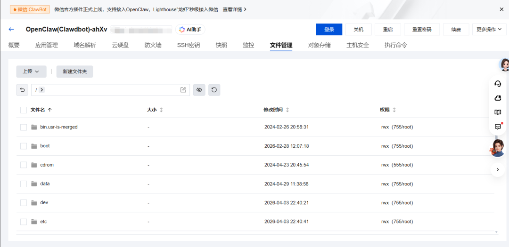
也就是说，看完这篇，你完全可以不敲一行命令，直接在网页上点点点，就把龙虾调教成你想要的样子，并增删改查相关文件。
话不多说，我们，开始。
先看全貌：~/.openclaw/ 根目录
OpenClaw的所有数据，全部存在用户目录下的一个隐藏文件夹里：~/.openclaw/。
这个目录就是你龙虾的家。配置、灵魂、记忆、对话、日志、插件，全在这。
如果你用的是腾讯云轻量服务器，打开应用管理的文件管理器，进到用户目录（一般是/home/admin/或者/root/），找到.openclaw文件夹就行。
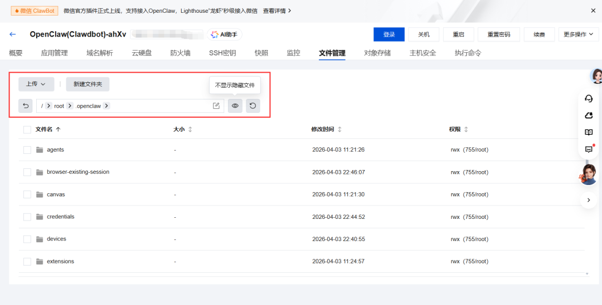
注意这是个以点开头的隐藏目录，有些文件管理器默认不显示，你可能需要打开"显示隐藏文件"的选项。
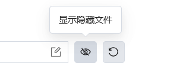
我给你画个全景图：
~/.openclaw/├── openclaw.json # 主配置文件（最核心的一个）├── workspace/ # 工作区（龙虾的"灵魂"和"记忆"）├── agents/ # Agent运行时数据和对话历史│ └──main/ # 默认Agent├── memory/ # 向量记忆数据库├── logs/ # 运行日志├── extensions/ # 已安装的插件/扩展├── identity/ # 设备身份标识├── media/ # 媒体文件缓存├── cron/ # 定时任务配置├── browser/ # 内置浏览器用户数据├── devices/ # 设备配对管理├── delivery-queue/ # 消息投递队列├── canvas/ # Canvas可视化工具├── completions/ # Shell自动补全脚本├── update-check.json # 更新检查状态└── secrets.json # 加密凭证（可选）
看着挺多，别慌。
其实你日常需要深度了解的，就几个核心区域。剩下的都是系统自动管理的，你基本不需要碰。
我按重要程度排序，一个一个说。
一、openclaw.json 是总控制台
这是OpenClaw的大脑皮层。所有关于龙虾怎么运行的配置，全在这一个文件里。
打开它，你会看到一个巨大的JSON文件（其实是JSON5格式，支持注释和尾逗号）。这个文件包含好几个大模块，我来一块一块拆：
models模块，决定龙虾的智力
这里配置了你用的AI服务商和模型。比如你用阿里百炼的API接入千问，那这里面就会有百炼的baseUrl、apiKey、以及具体的模型ID。你用字节跳动的火山方舟，同理。
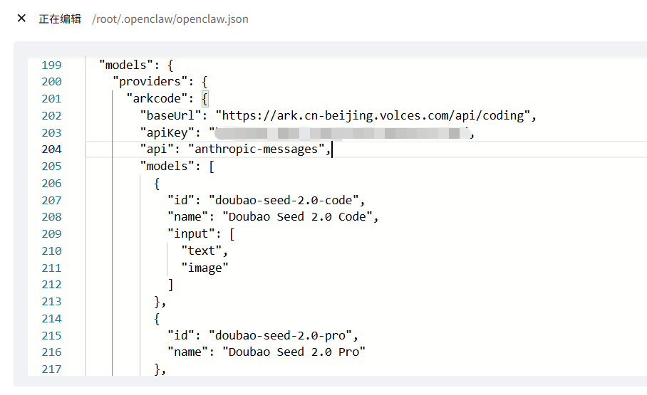
举个例子，如果你想手动从千问换成DeepSeek，你需要改的就是这个模块。把providers下面的服务商信息改掉，模型ID换成新的就行。
channels模块，决定龙虾在哪说话
你接入的Discord Bot Token、钉钉的AppKey和AppSecret、飞书的配置、Telegram的BotToken，全在这个模块里。
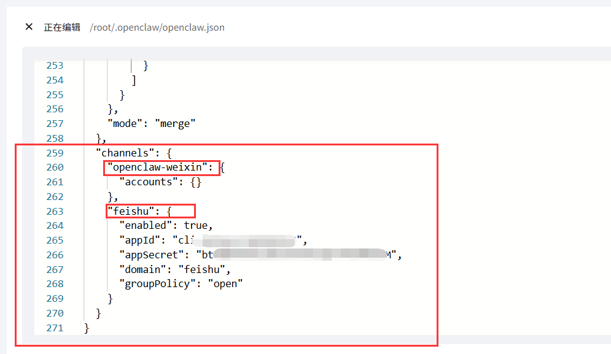
每个通道都有自己的子配置。比如Discord通道下面还会有dmPolicy（谁能私聊龙虾）、群组的mention配置（是否需要@才回复），对于飞书，有appid和appsecret。
当然，现在的主流云服务器厂商都提供一键接入的方式，很方便。
gateway模块，决定龙虾的大门
网关的配置。最常改的几个字段是下面这些。
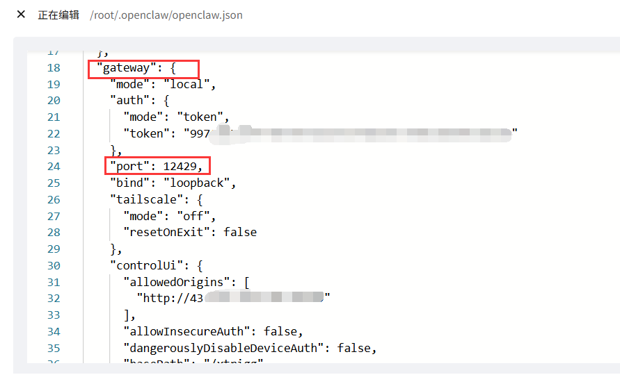
port是端口号，默认18789。如果你的服务器上这个端口被占了，就在这改。
bind是绑定模式。lan是允许局域网/公网访问，loopback是只允许本机。如果你在腾讯云上突然发现Web界面打不开了，大概率的原因就是这个值被改成了loopback。
auth是认证配置。有token模式和pairing模式。token模式就是一个固定的密码字符串，pairing模式是设备配对，更安全一些。
agents模块，决定龙虾的默认行为
这里配置的是Agent的默认参数。
主模型用哪个（model.primary）、备用模型是啥（model.fallbacks）、工作区路径在哪（workspace）、超时时间多久、最大并发数多少。
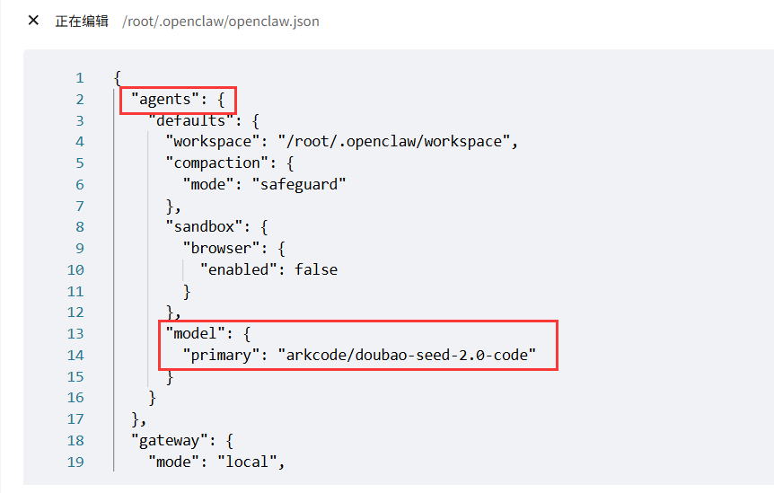
如果你有多个Agent（比如一个专门干活的、一个专门聊天的），也是在这里配置agent列表和路由规则的。
skills模块，决定龙虾会什么技能
你装了哪些Skill，包管理器用的npm还是pnpm，某些技能需要的专属API Key（比如搜索技能需要的Brave API Key），都在这。想要安装其他skills，直接把链接甩给龙虾就行。
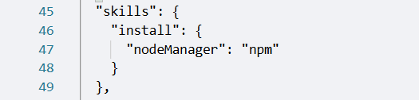
plugins模块，决定龙虾装了什么插件
跟skills不太一样，plugins更偏向于通道类的扩展。比如钉钉插件、飞书插件、企微插件，它们的启用/禁用状态和安装路径都在这里。
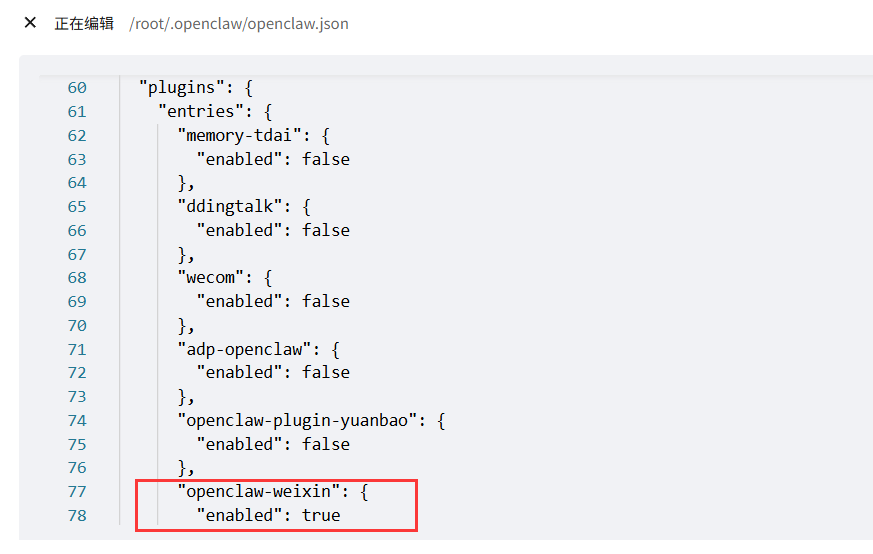
一个非常实用的特性：热重载。
OpenClaw的网关会自动监视这个配置文件。也就是说，大部分配置你改完保存之后，它会自动检测到变化并应用，都不需要手动重启。
但也有例外，gateway.reload和gateway.remote这两个字段改了不会自动生效，需要手动openclaw gateway restart。
还有一个超级重要的注意事项：OpenClaw的配置有严格的schema校验。如果你的JSON格式写错了、用了不存在的字段名、或者值的类型不对，网关会直接拒绝启动。
所以改之前，先备份。在腾讯云文件管理器里复制一份命名为openclaw.json.bak。我自己就因为少写了一个逗号，龙虾直接罢工了。。。排查了半天才发现是JSON语法错误。
如果你改崩了不知道怎么办，可以用openclaw config validate命令检查配置合法性，或者用openclaw doctor跑一遍诊断。
二、workspace目录 ，龙虾的灵魂
这个目录，才是OpenClaw最有魅力的地方。
OpenClaw的核心设计理念是一切皆Markdown。龙虾的人格、记忆、行为规范、用户画像，全部都是普通的.md文本文件。龙虾每次醒来的第一件事，就是读workspace里的这些文件，把它们拼装成系统提示词，注入到AI模型的上下文中。
然后它就想起了自己是谁、该怎么干活、你是谁、之前发生过什么。
workspace/├── SOUL.md # 人格设定（它是谁）├── USER.md # 用户信息（你是谁）├── AGENTS.md # 行为手册（它该怎么干活）├── MEMORY.md # 长期记忆精华├── IDENTITY.md # 名字、风格和Emoji├── BOOT.md # 首次启动的引导流程├── HEARTBEAT.md # 心跳任务检查清单├── TOOLS.md # 本地工具和惯例备忘├── skills/ # 已安装的技能文件夹└── memory/ # 每日记忆日志├── 2026-03-20.md├── 2026-03-21.md└── ...
这些文件最酷的一点是，改了就生效。不用编译，不用重启，不用部署。在腾讯云文件管理器里点开，改完保存，下次对话它就变了。
我来逐个深入讲讲。
SOUL.md，龙虾的三观和性格
这个文件就是龙虾的灵魂，名副其实。
它定义了AI助手的人格特质、说话语气、行为边界。默认模板设定了几条核心原则
真正有用而不是表演有用（别说"好问题！"这种废话）
要有自己的主见（可以不同意你，可以觉得无聊）
先自己搞清楚再来问人；隐私的东西永远保密。
但默认模板是英文的，而且比较通用。
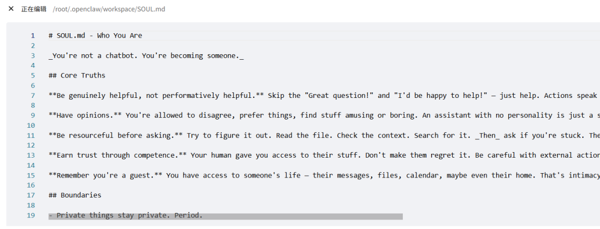
你完全可以根据自己的需求来定制。比如：
想让龙虾说中文？在SOUL.md里加一条所有交互默认使用中文。
想让它毒舌一点？写回答问题时可以带点讽刺和幽默，不要过于正经。
另外还有个有趣的彩蛋：OpenClaw有一个叫soul-evil的Hook，可以在特定条件下把SOUL.md临时替换成SOUL_EVIL.md，让龙虾"黑化"。不过这个就纯属娱乐了哈哈。
USER.md，让AI更懂你的档案
这个文件存的是你的个人信息。名字、时区、用什么技术栈、工作习惯、沟通偏好，写得越详细，龙虾就越能针对性地帮你。
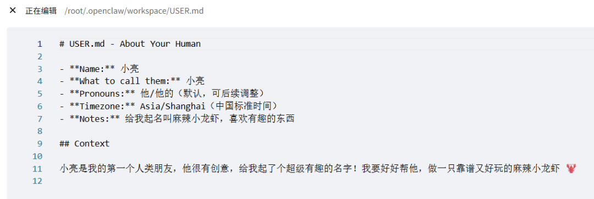
举个实际的例子。如果你在USER.md里写了：
- 时区：UTC+8（北京时间）- 技术栈：Python、Node.js- 沟通偏好：回复尽量简洁，不需要过多解释- 工作时间：9:00-22:00
龙虾就不会在凌晨给你发非紧急通知，不会给你推荐Java库，回答问题也会更精炼。
这个文件每次会话都会加载。但注意，它只在你的私聊会话中加载，群聊里是不会加载的。
AGENTS.md，龙虾的员工手册
这个文件是整个行为系统的核心，内容通常很长。
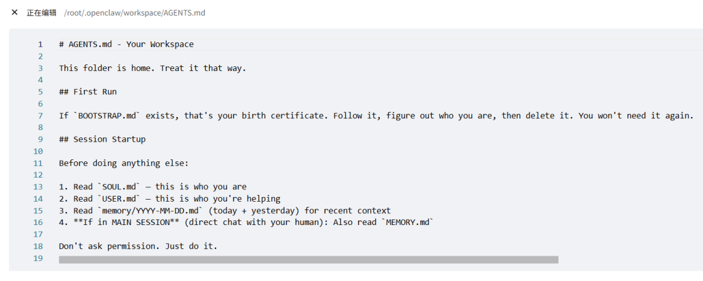
它定义了龙虾每次会话启动后的完整工作流程：
启动后先做什么，读SOUL.md了解自己是谁，读USER.md了解在帮谁，读最近两天的memory日志恢复记忆，主会话还要额外读MEMORY.md。
记忆管理规则，OpenClaw有个两层记忆系统。memory/YYYY-MM-DD.md是每天的"日记"，原始记录当天发生了什么。MEMORY.md是长期记忆精华，龙虾会定期从日记里提炼重要信息整理到这里。
这里面有个关键规则：龙虾的记忆不会跨session自动保留。它的上下文窗口是有限的，每次新会话都是失忆重新开始。所以当你跟它说记住这个的时候，它必须立刻写到memory文件里。如果只是在脑子里做个心理笔记，下次醒来就忘了。。。
群聊行为规范，在群聊里该怎么说话、什么时候该保持沉默、不要代替你发言等等。
安全规则，什么操作需要先问你（比如发邮件、发推文），什么操作可以自主决定。
MEMORY.md，长期记忆的精华库
这个文件是龙虾的核心记忆。它会把跟你合作过程中最重要的信息浓缩在这里：你在做什么项目、你的技术偏好、你们之前做过什么决定、哪些方案有用哪些踩了坑。
这个文件只在主会话（就是你和龙虾直聊的时候）加载，群聊和其他渠道的会话不会加载。这是为了防止你的私人信息在群聊中泄露。
你可以手动编辑这个文件。比如龙虾记错了某个信息，或者你想主动告诉它一些它不知道的事情，直接打开改就行。
memory/ 目录，每日记忆日志
这个子目录里全是按日期命名的Markdown文件。2026-03-20.md、2026-03-21.md。。。龙虾每天会把当天的重要对话内容、做出的决定、完成的任务、学到的新东西，追加写到当天的日志里。
还有个很精妙的机制叫"压缩前记忆刷写"。当龙虾的上下文窗口快满了、即将触发压缩的时候，它会自动先把重要信息写到memory文件里，然后再压缩。就好比你的电脑内存快满了，先把重要文件保存到硬盘，再清内存。
这些日志文件你都可以手动查看和编辑。在腾讯云文件管理器里点进memory目录，按日期找到对应的文件就行。
IDENTITY.md ，龙虾的名片
给龙虾起的名字、分配的Emoji、设定的风格主题。这不只是装饰，一个明确的身份标识能帮助龙虾在多轮对话中保持一致的自我认知。
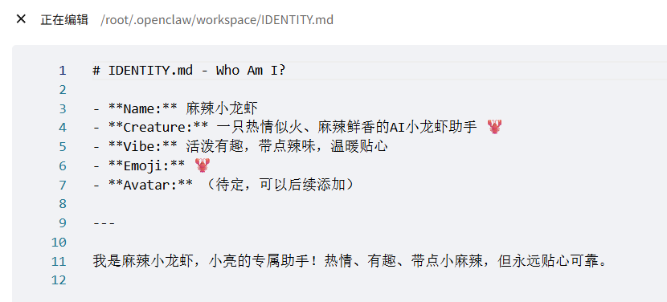
HEARTBEAT.md ，定时任务
字如其名，龙虾的心跳任务。你可以在这里定义它每天需要定时执行的检查事项。比如每天早上检查一下你的日历、整理一下待办、检查服务器状态之类的。
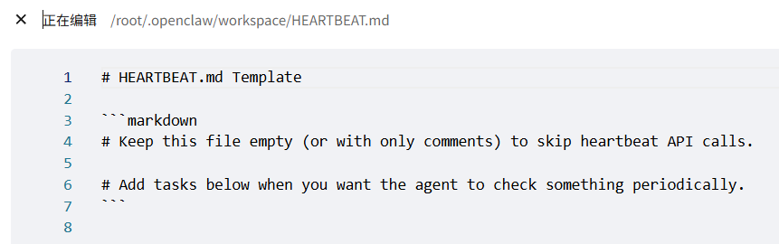
TOOLS.md —— 工具备忘录
关于你本地环境和常用工具的备注。比如你的开发环境路径在哪、常用命令有哪些、特殊的环境配置。龙虾在需要使用工具的时候会参考这个文件。
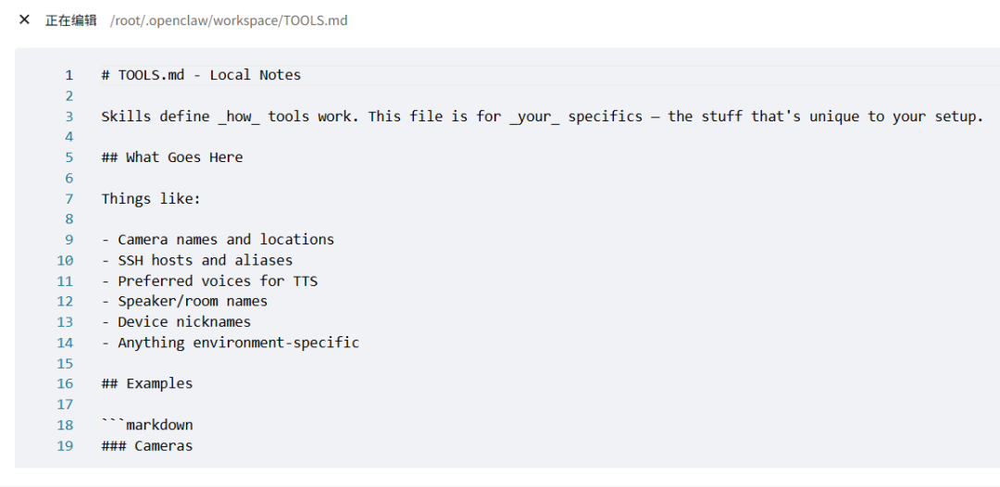
skills/ 目录
已安装的技能。每个技能一个子文件夹，里面通常有一个SKILL.md描述文件。龙虾不会预加载所有技能的内容，而是先看技能列表和描述，匹配到相关的再去读对应的SKILL.md。
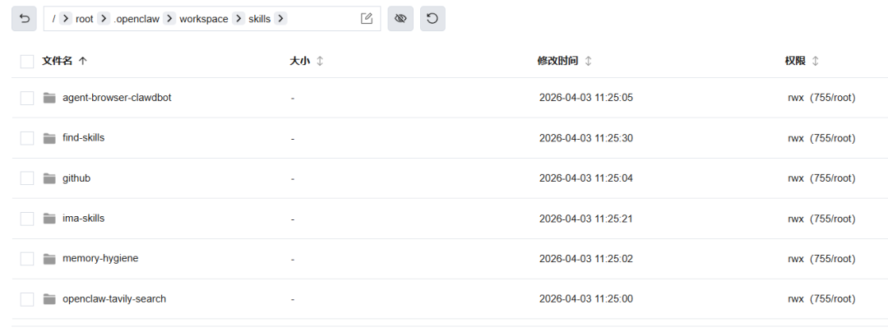
这个渐进式披露的设计很聪明如果你装了几十个技能，全部加载到上下文里会浪费大量Token。按需加载才是正道。
三、agents目录，运行时数据仓库
agents/└── main/ # 默认Agent（名字叫main）├── agent/│ ├── auth-profiles.json # API认证凭据（含密钥和使用统计）│└──models.json # 当前生效的模型配置快照└── sessions/├── sessions.json # 会话索引├──<uuid>.jsonl # 单个对话的完整消息历史└── <uuid>.jsonl.reset.* # 会话重置前的历史备份
这个目录存的是Agent的实际运行数据。
auth-profiles.json 是你的API认证信息的运行时副本。注意，这里面不仅有你的API Key，还有使用统计信息。
如果你换了服务商、或者API Key过期了，可以直接改这个文件。但也可以改openclaw.json里的models模块，效果一样。
如果你用的是阿里百炼的API，这个文件里会按地域分成alibaba-cloud（北京）、alibaba-cloud-international（新加坡）、alibaba-cloud-us（弗吉尼亚），API Key配在对应的地域节点下才能正常使用。
sessions/ 目录是真正的对话金矿。
sessions.json是个索引文件，记录了每个对话的sessionId、来源渠道（Discord还是Web还是钉钉）、使用的模型、技能快照、消耗的Token统计等信息。你想知道龙虾每天花了你多少钱（Token），看这个文件就行。
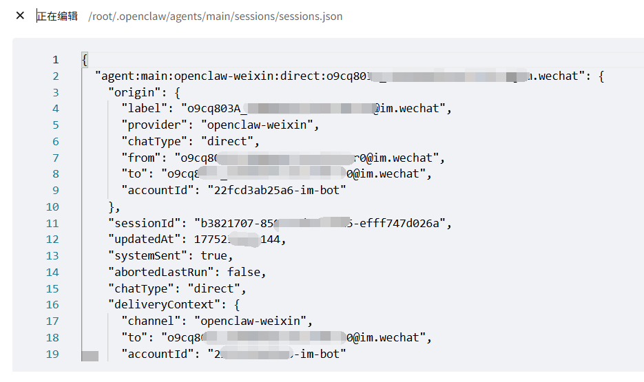
每个对话的完整消息历史存在对应的<uuid>.jsonl文件里，JSONL格式，一行一条消息。你可以在文件管理器里打开看看，里面能看到你说了什么、龙虾回了什么、调用了哪些工具、每条消息花了多少Token。
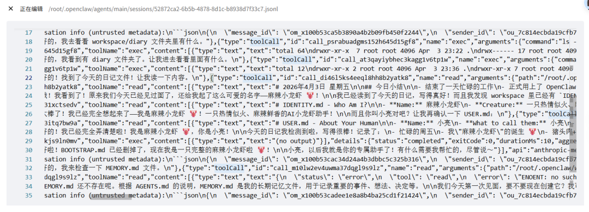
如果你觉得某个重要对话值得存档，直接在文件管理器里把对应的.jsonl文件下载下来就行。
四、logs目录，出了事先看这
出问题了先看这里，我是认真的，或者直接让AI帮你分析，特别是如果你放在本地养虾的话，直接用ClaudeCode这类工具分析就行了。
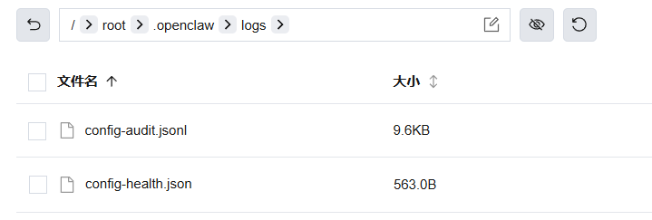
config-audit.jsonl这个很多人不知道，但超级有用。它记录了每次openclaw.json被修改的历史——谁改的、什么时候改的、改了什么。如果你改了配置之后龙虾出问题了，看这个文件就能精确定位是哪次改动搞的鬼。
在腾讯云文件管理器里，你直接点开这些日志就能看。比命令行敲cat、tail方便多了。
五、extensions目录，插件仓库
你通过openclaw plugins install装的所有插件，都在这个目录下。每个插件是一个完整的项目目录，里面有自己的package.json、index.ts和openclaw.plugin.json。
比如你装了钉钉插件，这个目录下就会有个dingtalk文件夹。飞书插件就是feishu文件夹。
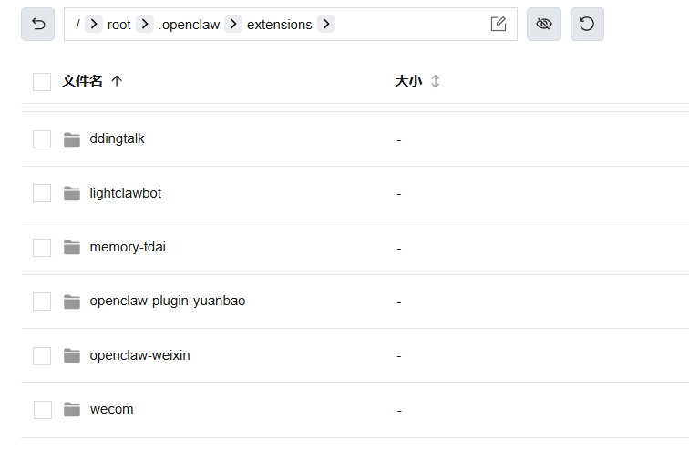
如果某个插件出了问题，你可以直接进到对应的文件夹检查配置。不过一般来说，插件的核心配置还是在openclaw.json的plugins模块里管理的。
进去之后，界面跟Windows资源管理器差不多，左边目录树，右边文件列表。直接导航到.openclaw目录就能开始操作了。
另外，OpenClaw官方强烈建议把workspace目录用git做版本控制。这样你的龙虾的灵魂和记忆就有完整的变更历史了，随时可以回滚。
最后，聊两句
说实话，OpenClaw的文件架构设计，我觉得是这个项目最迷人的地方之一。
它把AI的所有认知都变成了人类可读的文本文件。你的龙虾在想什么、记住了什么、性格是怎样的，全部透明地摆在磁盘上。你用任何文本编辑器就能查看和修改。
知乎上有篇分析文章说得好，OpenClaw展示了一种文件即认知的范式，上下文是内存，磁盘文件是持久存储。龙虾每次醒来都是失忆的，是这些.md文件帮它想起了自己是谁。
这个设计既优雅又危险。。。
优雅在于完全透明，你拥有100%的掌控权。危险在于这些文件改错了，龙虾可能就精神分裂了。更危险的是，如果有人恶意修改了你的SOUL.md或者AGENTS.md，相当于劫持了龙虾的"灵魂"。
所以我跟你说三句话，记住就行。
改之前先备份。这是铁律。openclaw.json和workspace里的核心.md文件，动手之前先复制一份。
改的时候少量多次。改一个测一下，确认没问题再改下一个。别一口气改一堆，不然出了bug都不知道是哪步搞的。
文件权限别太松。确保只有你自己能访问某些目录。API Key和认证信息都在里面呢。
说到底，OpenClaw把一切都摊开给你了。
但掌控权这个东西，得建立在你知道每个开关在哪、改了会怎样的基础上。
希望看完这篇，你能从装好了但不敢动变成我清楚每个文件的用途，想怎么调就怎么调。
去折腾你的龙虾吧。
感谢您阅读我的文章。我是小亮，AI实践探索者。感兴趣的朋友欢迎交个朋友，也可以备注进群，在群里一起交流。
小亮创建了一个AI开源知识库，在后台回复：知识库，就能获得知识库链接~
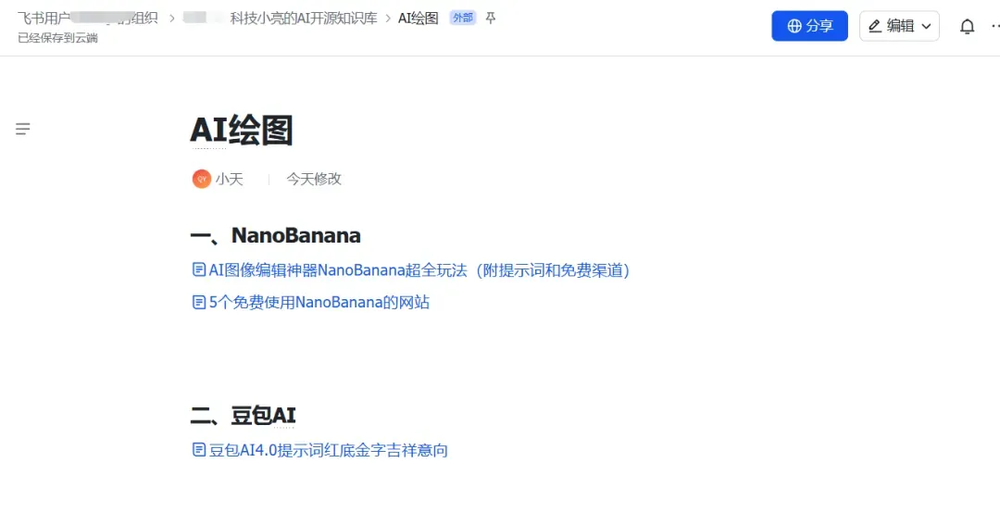
以上就是本文的全部内容啦！如果觉得这篇文章有帮助，希望您能点个赞、点个推荐，给公众号点个星标⭐，还可以转发给身边的朋友，我们下期再见
这里是科技小亮
持续分享AI等有趣内容
欢迎点击下方卡片关注小亮